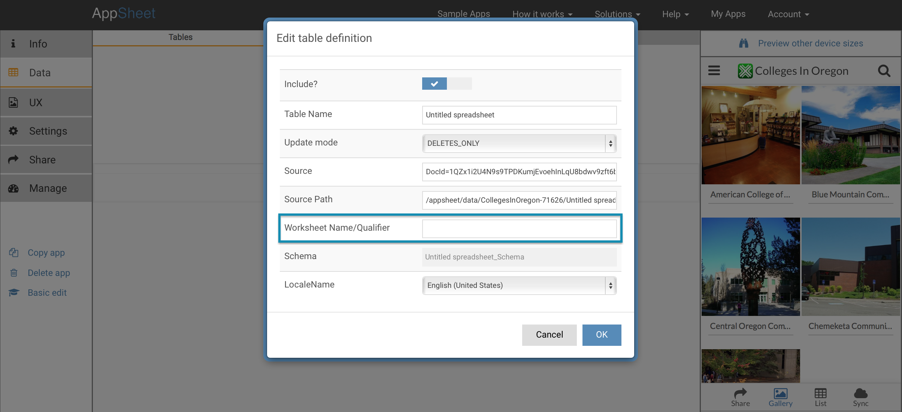

Instead of using the first worksheet in a spreadsheet file, you can specify a specific worksheet by name.
In the Advanced Editor>Data>Tables pane, when you look at the details for the Tables in the app, you can provide a specific worksheet name in the 'Worksheet Name/Qualifier' field.

If a worksheet with this name is not found in the referenced spreadsheet, AppSheet will default to the first worksheet.